Handleiding
RankPilot Prov1.4.0
De complete SEO-oplossing, plus een laag om vindbaar te zijn in ChatGPT, Perplexity, Gemini en Claude.
Wat het doet
RankPilot Pro helpt je pagina's te vinden in Google én in AI-assistenten. Het doet twee dingen: het regelt de technische kant van SEO, en het laat in de editor en in je lijsten zien wat er beter kan.
llms.txt, een Markdown-versie van elke pagina, beheer van 17 AI-crawlers, IndexNow naar Bing en blokken voor kernpunten en FAQ.Wat niemand kan beloven Een vermelding in ChatGPT of Perplexity kan niemand garanderen, want die systemen kiezen zelf hun bronnen. RankPilot Pro zorgt dat je site gelezen mág worden, goed te begrijpen is en makkelijk te citeren is. Het resultaat hangt ook af van de kwaliteit van je inhoud en van vermeldingen op andere sites.
Installeren
Vereisten
- WordPress 6.0 of nieuwer.
- PHP 7.4 of nieuwer. De PHP-extensie DOM is nodig voor de Markdown-versie van pagina's.
- Mooie permalinks (alles behalve "Eenvoudig"), zodat
/sitemap_index.xmlen/llms.txtwerken.
Stappen
- Download
rankpilot-pro.zipvan de laatste release. - Ga in WordPress naar Plugins → Nieuwe plugin → Plugin uploaden en kies de zip.
- Klik op Activeren.
- Open RankPilot Pro in het beheermenu aan de linkerkant. Het icoon is een limoengroene tegel met een stijgende lijn.
Draait er al een andere SEO-plugin? Zet Yoast SEO of Rank Math nog niet uit. Importeer eerst je gegevens (zie Importeren en tools) en zet de andere plugin daarna uit. Anders krijg je dubbele metatags en dubbel schema. RankPilot Pro waarschuwt hiervoor zelf.
Eerste keer instellen
Met deze vijf stappen staat de plugin goed. Reken op een kwartier.
- Importeer je oude gegevens via RankPilot Pro → Importeren & tools, als je van Yoast of Rank Math komt.
- Vul je organisatie in bij Instellingen → Organisatie & profielen. Dit is de belangrijkste stap voor herkenning door Google en AI-modellen.
- Laat AI-zoekbots toe bij Instellingen → AI-zichtbaarheid. Zet OAI-SearchBot, ChatGPT-User, PerplexityBot, Claude-SearchBot en Claude-User op Toestaan.
- Zet IndexNow aan op dezelfde pagina, zodat Bing (de zoekindex achter ChatGPT Search en Copilot) wijzigingen direct hoort.
- Reken je scores door met de knop SEO- en leesscores berekenen op het dashboard, zodat de stoplichten in je lijsten gevuld zijn.
Dashboard
Het dashboard van RankPilot Pro staat onder RankPilot Pro → Dashboard. Bovenaan zie je vier cijfers: de AI-zichtbaarheid van je site, het aantal pagina's en berichten, het aantal AI-crawlerbezoeken van de laatste 30 dagen en het aantal actieve redirects.
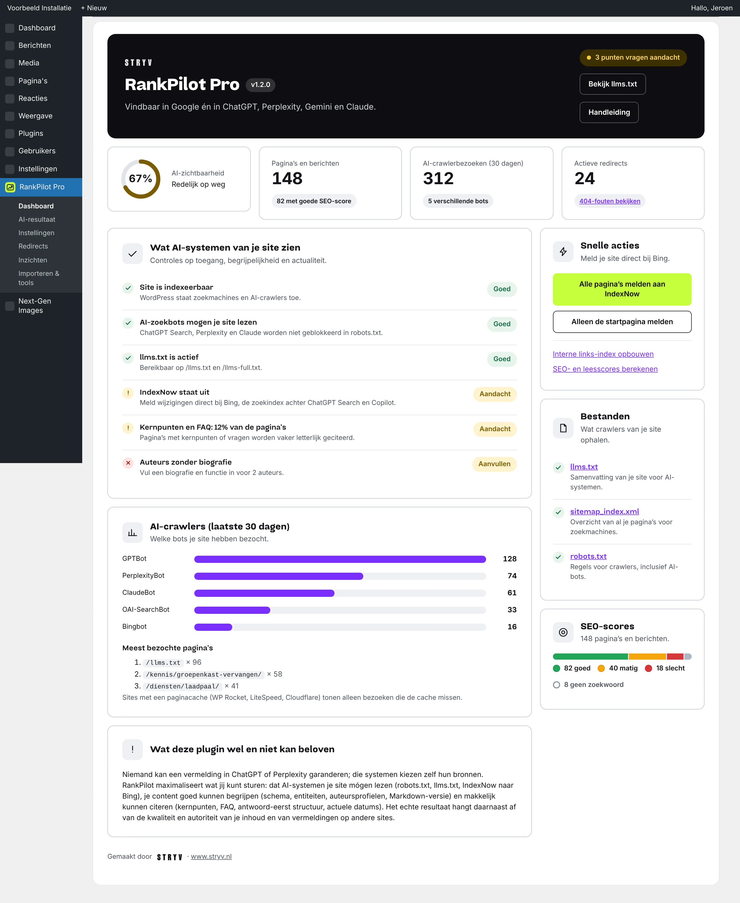
Rechtsboven in de kop van elke RankPilot-pagina staat de knop Handleiding. Daarmee open je deze handleiding. Je vindt dezelfde link ook bij de plugin in de pluginlijst.
De AI-controle
Het blok Wat AI-systemen van je site zien controleert onder meer of je site indexeerbaar is (de WordPress-instelling "Zoekmachines ontmoedigen" staat uit), of AI-zoekbots je site mogen lezen, of er een fysiek robots.txt is dat de instellingen van RankPilot Pro blokkeert, of je site op HTTPS draait, of je organisatiegegevens en auteursbiografieën zijn ingevuld, of de sitemap, llms.txt en IndexNow aanstaan en hoeveel pagina's een meta description, kernpunten of een FAQ hebben. Elk punt krijgt Goed, Aandacht of Aanvullen. De ring bovenaan vat het samen, en de melding rechtsboven in de kop telt hoeveel punten aandacht vragen.
AI-crawlers
Hier zie je welke AI-bots je site hebben bezocht en welke pagina's ze het vaakst ophalen. Sites met een paginacache (WP Rocket, LiteSpeed, Cloudflare) tonen alleen bezoeken die de cache missen.
Snelle acties
- Alle pagina's melden aan IndexNow stuurt je hele site naar Bing. Handig na de eerste installatie.
- Interne links-index opbouwen scant je content op links, voor de pagina Inzichten.
- SEO- en leesscores berekenen rekent alle pagina's door die nog geen score hebben.
AI-resultaat: van bezoek naar aanvraag
De pagina RankPilot Pro → AI-resultaat laat zien wat verkeer uit ChatGPT, Perplexity, Gemini en Claude je oplevert. Niet alleen dat iemand kwam, maar ook of die persoon daarna contact opnam.
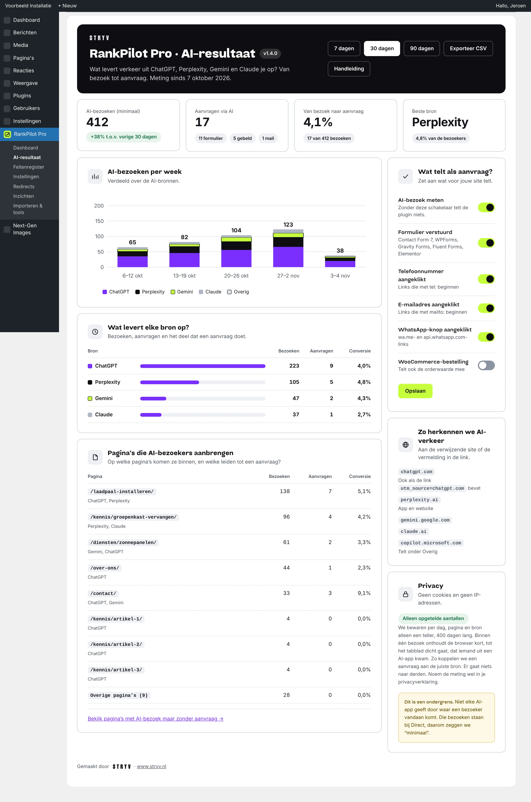
Wat je ziet
- Vier cijfers bovenaan: het aantal AI-bezoeken (met de verandering ten opzichte van de vorige periode), het aantal aanvragen, het percentage bezoekers dat een aanvraag doet en de beste bron.
- Grafiek: bezoeken per week, of per dag bij 7 dagen, verdeeld over de bronnen.
- Per bron: bezoeken, aanvragen en conversie van ChatGPT, Perplexity, Gemini, Claude en Overig.
- Per pagina: de pagina's waarop AI-bezoekers binnenkomen en welke tot een aanvraag leiden. Via Bekijk pagina's met AI-bezoek maar zonder aanvraag zie je waar mensen binnenkomen maar niets doen. Dat zijn vaak de pagina's die een duidelijkere stap verdienen.
- Periode en export: kies rechtsboven 7, 30 of 90 dagen. Met Exporteer CSV krijg je de cijfers per pagina en bron voor Excel.
Wat telt als aanvraag?
Aan de zijkant stel je in wat voor jouw site telt. Standaard staan aan: een verstuurd formulier, een aangeklikt telefoonnummer, een aangeklikt e-mailadres en een aangeklikte WhatsApp-knop. Een WooCommerce-bestelling (met orderwaarde) staat standaard uit.
| Doel | Wanneer telt het? |
|---|---|
| Formulier | Het formulier is verstuurd zonder dat de pagina herlaadt. Dit werkt met Contact Form 7, WPForms, Gravity Forms, Fluent Forms en Elementor-formulieren. |
| Telefoon | Iemand klikt op een link die met tel: begint. |
Iemand klikt op een link die met mailto: begint. | |
Iemand klikt op een wa.me- of api.whatsapp.com-link. | |
| Bestelling | Iemand komt op de bedankpagina van WooCommerce. De orderwaarde wordt meegeteld. |
Een aanvraag wordt toegekend aan de pagina waarop de bezoeker uit de AI-app binnenkwam, niet aan de pagina waar het formulier stond. Per bezoek telt elk soort aanvraag één keer.
Zo werkt de herkenning
De plugin kijkt naar de site waar de bezoeker vandaan komt (chatgpt.com, perplexity.ai, gemini.google.com, claude.ai) en naar de vermelding utm_source=chatgpt.com in de link. Bezoekers uit copilot.microsoft.com tellen mee onder Overig.
Dit is een ondergrens. Niet elke AI-app geeft door waar een bezoeker vandaan komt. Zulke bezoeken staan in je gewone statistieken bij Direct. De cijfers laten dus minimaal zien wat AI oplevert. De plugin telt ook alleen vanaf het moment dat de meting aanstaat, en niet voor je eigen bezoek als je bent ingelogd.
Formulieren zonder AJAX tellen niet. Een formulier dat na het versturen naar een nieuwe pagina doorstuurt, wordt niet herkend. Het aanklikken van telefoon, mail en WhatsApp werkt altijd.
Privacy
De meting werkt zonder cookies en zonder IP-adressen. De plugin bewaart per dag, pagina en bron alleen een teller, en wist cijfers ouder dan 400 dagen. Binnen één bezoek onthoudt de browser kort, tot het tabblad dicht gaat, dat iemand uit een AI-app kwam. Daardoor kan een aanvraag aan de juiste bron gekoppeld worden. Er gaat niets naar andere partijen.
Noem de meting in je privacyverklaring. Je kunt de meting uitzetten met de schakelaar AI-bezoek meten op deze pagina of bij Instellingen → AI-zichtbaarheid.
Feitenregister: één waarheid over je bedrijf
Het Feitenregister (RankPilot Pro → Feitenregister) is de plek waar je de gegevens vastlegt die je site overal gelijk moet noemen: je telefoonnummer, e-mailadres, openingstijden, werkgebied en eigen feiten zoals een prijs. RankPilot controleert daarna of een pagina iets anders zegt. Dat is belangrijk omdat een AI-assistent beide versies kan citeren, en dan noemt hij bijvoorbeeld een oude prijs.
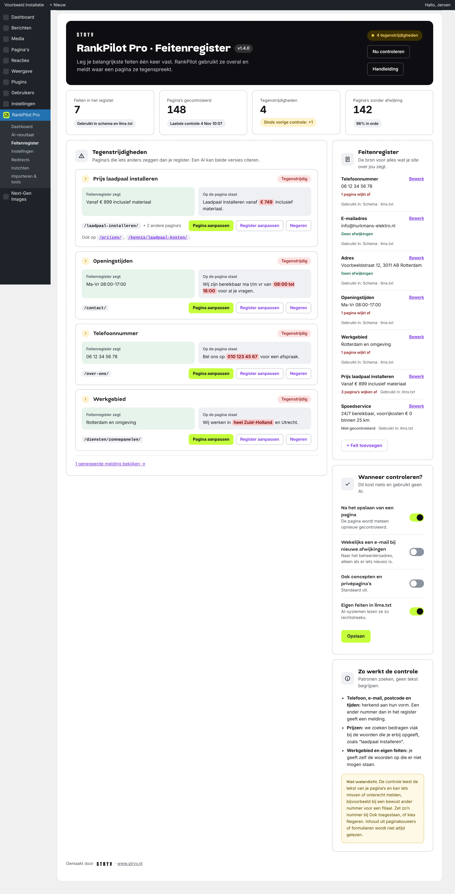
Wat je ziet
- Vier cijfers bovenaan: het aantal feiten, het aantal gecontroleerde pagina's, het aantal tegenstrijdigheden (met de verandering sinds de vorige controle) en het aantal pagina's zonder afwijking.
- Tegenstrijdigheden: per afwijking links wat je register zegt en rechts wat de pagina zegt, met de afwijkende tekst gemarkeerd. Staat dezelfde afwijking op meer pagina's, dan zie je + 2 andere pagina's en een lijst ervan.
- Het register: je feiten met per feit waar ze worden gebruikt en of er pagina's afwijken.
Wat doe je met een melding?
- Pagina aanpassen opent de pagina in de editor. Zo corrigeer je de tekst.
- Register aanpassen opent het feit in het register. Is de pagina juist en je register verouderd, dan pas je het daar aan. Na het opslaan wordt alles opnieuw gecontroleerd.
- Negeren haalt de melding uit je overzicht, bijvoorbeeld bij het nummer van een filiaal. Dezelfde afwijking wordt dan ook op andere pagina's niet meer gemeld. Onder Genegeerde meldingen zet je hem met Weer melden terug.
Feiten vastleggen
Telefoonnummer, e-mailadres, adres, openingstijden en werkgebied komen uit Instellingen → Organisatie & profielen. Je kunt ze daar of in het register aanpassen. Het adres pas je alleen bij de instellingen aan. Met + Feit toevoegen maak je eigen feiten:
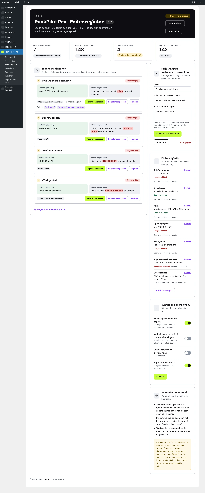
| Soort | Wat je invult | Wanneer meldt de controle iets? |
|---|---|---|
| Telefoonnummer | Je nummer, en eventueel andere toegestane nummers. | Een pagina noemt een Nederlands nummer dat niet in je register staat. |
| E-mailadres | Je adres, en eventueel andere toegestane adressen. | Een pagina noemt een ander adres op jouw domein. Adressen van andere domeinen worden niet gemeld. |
| Openingstijden | Eén regel per dag of groep, zoals Ma-Vr 08:00-17:00. | Een pagina noemt bij een dag of het woord open een tijdsblok dat niet in je register staat. |
| Prijs | De prijs en de woorden waar hij bij hoort, zoals laadpaal installeren. | Er staat een ander bedrag vlak bij die woorden. |
| Eigen feit | De juiste waarde, en de woorden die er niet mogen staan. | Een pagina bevat een van die woorden, zoals een oud werkgebied. |
Ook een afwijkende postcode wordt gemeld. Een feit waarvoor niets is ingevuld om op te controleren, krijgt de status Niet gecontroleerd.
Wanneer wordt er gecontroleerd?
- Handmatig: met Nu controleren rechtsboven loopt RankPilot al je gepubliceerde pagina's en berichten langs. De eerste controle moet je zelf starten.
- Na het opslaan van een pagina: die ene pagina wordt direct opnieuw gecontroleerd. Staat standaard aan.
- Wekelijks: een e-mail aan het beheerdersadres, alleen als er nieuwe afwijkingen zijn. Staat standaard uit.
- Ook concepten en privépagina's: standaard uit.
Bij Eigen feiten in llms.txt komen je zelf toegevoegde feiten in een blok ## Feiten in llms.txt, zodat AI-systemen ze rechtstreeks lezen. Je telefoonnummer, adres en andere vaste gegevens staan daar al.
De controle is niet waterdicht. Ze zoekt patronen in de tekst van je pagina's en gebruikt geen AI. Daardoor kan ze iets missen, bijvoorbeeld een prijs die in een afbeelding of een tabel van een paginabouwer staat, of een melding geven die niet klopt, bijvoorbeeld bij een bewust ander nummer. Zet zulke nummers bij Ook toegestaan of kies Negeren. De controle leest de inhoud van de editor, dus teksten die een thema of paginabouwer zelf toevoegt, worden niet altijd gezien.
Er verlaat geen gegevens je site. De controle draait volledig op je eigen server.
Blok in het WordPress-dashboard
Op het gewone WordPress-dashboard (Dashboard → Startpagina) staat een blok RankPilot Pro – zichtbaarheid, bovenaan de linkerkolom. Het geeft in één oogopslag een beeld van je hele site.
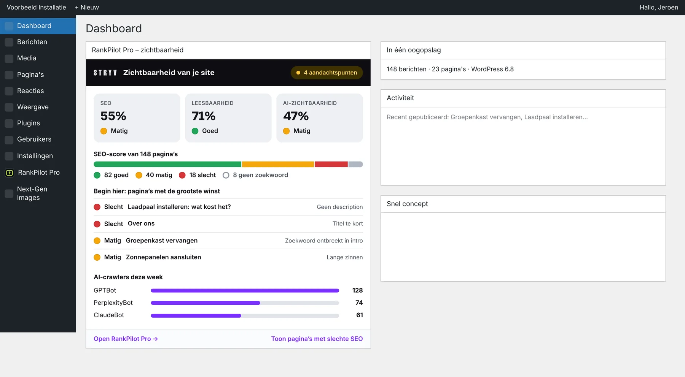
- Drie scores: het percentage pagina's met een goede SEO-score, een goede leesbaarheid en een goede AI-zichtbaarheid. Het stoplicht erbij is groen vanaf 70%, oranje vanaf 40% en anders rood.
- De verdelingsbalk toont hoeveel pagina's goed, matig of slecht scoren, en hoeveel er nog geen focus-keyphrase hebben.
- Begin hier noemt maximaal vier pagina's met de grootste winst, met de belangrijkste reden. Klik door om de pagina te bewerken.
- AI-crawlers deze week toont de drie meest actieve bots. Dit deel zien alleen beheerders.
Het blok is te verbergen of te verplaatsen via Schermopties bovenaan het WordPress-dashboard, zoals elk ander blok.
Stoplichten in de lijst met berichten en pagina's
In Berichten, Pagina's en andere inhoudstypes staan twee extra kolommen: SEO en Leesbaar. Zo zie je zonder een pagina te openen waar het beter kan.
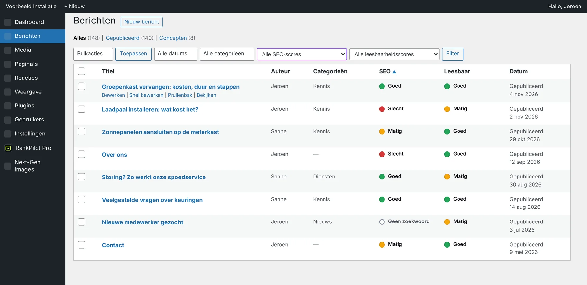
| Stoplicht | SEO betekent | Leesbaar betekent |
|---|---|---|
| Goed | Alle belangrijke punten kloppen: keyphrase in titel, description, intro en URL, en genoeg tekst. | Makkelijk te lezen (Flesch-Douma-score van 60 of hoger). |
| Matig | Niets ontbreekt, maar er zijn meerdere verbeterpunten. | Redelijk leesbaar (score 50 tot 60). Kortere zinnen en woorden helpen. |
| Slecht | Een belangrijk punt ontbreekt: de keyphrase staat niet in de titel, er is geen meta description of de tekst is erg kort. | Moeilijk te lezen (score onder 50). |
| Geen zoekwoord | Er is nog geen focus-keyphrase ingesteld. Zonder zoekwoord kan er geen SEO-score zijn. | Nog niet berekend of te weinig tekst (minder dan 30 woorden). |
Filteren en sorteren
Boven de lijst staan twee uitklappers, Alle SEO-scores en Alle leesbaarheidsscores. Kies bijvoorbeeld Slecht en klik op Filter om alleen de rode pagina's te zien. Klik op de kolomkop SEO of Leesbaar om te sorteren, met de slechtste of de beste bovenaan. Beweeg met de muis over een stoplicht voor de belangrijkste reden.
Waar komen de scores vandaan?
De scores worden bewaard bij elke pagina. Open je een pagina in de editor, dan rekent de editor live en slaat de score bij het opslaan op. Voor pagina's die je niet hebt geopend (bijvoorbeeld na een import) berekent RankPilot Pro een eerste score bij het opslaan, of via de knop SEO- en leesscores berekenen op het dashboard.
Let op De berekening buiten de editor is bewust eenvoudiger dan de live analyse in de editor. De score in de editor is leidend: zodra je een pagina daar opslaat, geldt die.
In de editor
Onder elke pagina en elk bericht staat het blok RankPilot Pro met zes tabbladen. Bij SEO, Leesbaarheid en AI-zichtbaarheid staat een stoplicht dat live meebeweegt terwijl je schrijft. Dit werkt in de blok-editor en in de klassieke editor.
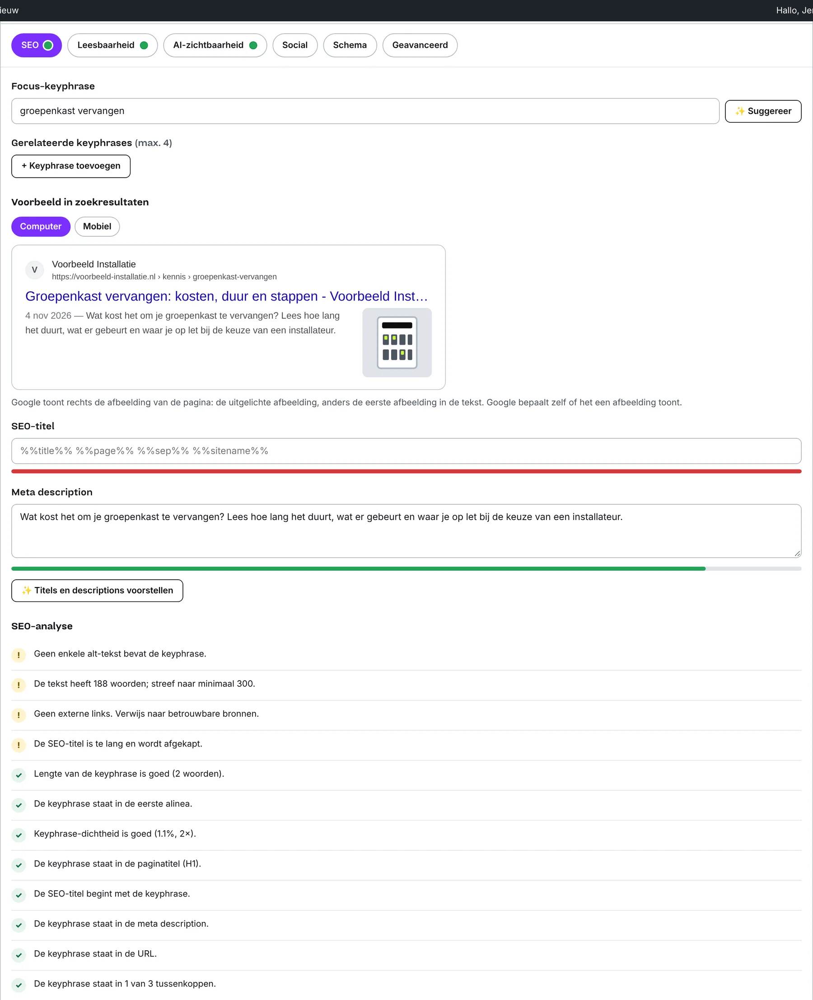
SEO
- Vul je focus-keyphrase in: waarop wil je gevonden worden? Een knop stelt er desgewenst voor je voor. Je kunt tot vier gerelateerde keyphrases toevoegen.
- Controleer het voorbeeld in zoekresultaten (zie hieronder).
- Pas de SEO-titel en meta description aan. De balkjes eronder worden groen als de lengte goed is. Laat je ze leeg, dan gebruikt RankPilot Pro de sjablonen uit de instellingen.
- Loop de SEO-analyse langs. De rode en oranje punten staan bovenaan, met uitleg wat je kunt doen.
- Gebruik de linksuggesties onderaan voor relevante pagina's om naar te linken. Cornerstone-content staat bovenaan.
Voorbeeld in zoekresultaten
Het voorbeeld ziet eruit zoals een resultaat in Google: het ronde pictogram en de sitenaam, de URL als kruimelpad, een blauwe titel, de datum met de beschrijving en rechts een miniatuur. De miniatuur is de afbeelding die Google zou tonen: de uitgelichte afbeelding, anders de eerste afbeelding in de tekst, anders de standaardafbeelding uit de instellingen. Kies je een andere uitgelichte afbeelding, dan past het voorbeeld zich aan.
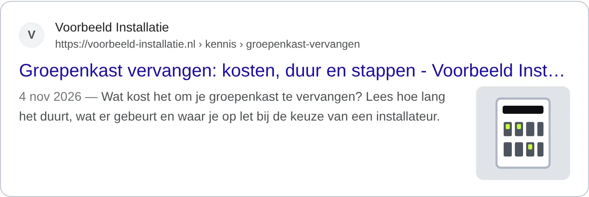
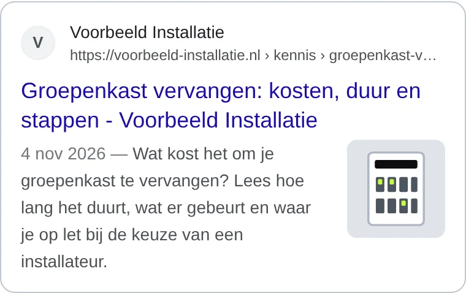
Google beslist Het voorbeeld laat zien wat Google op basis van jouw gegevens waarschijnlijk toont. Google bepaalt zelf of het een afbeelding, een andere titel of een andere beschrijving gebruikt.
Leesbaarheid
Toont de Flesch-Douma-leesscore, het aantal woorden en zinnen, en controles op lange zinnen, passieve zinnen, overgangswoorden en lange alinea's.
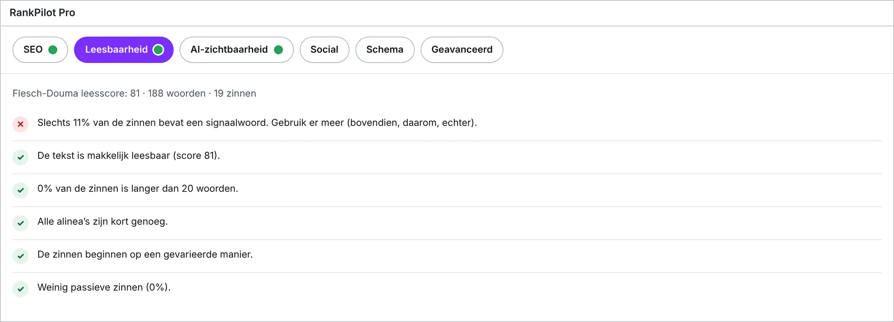
AI-zichtbaarheid
Een score van 0 tot 100 voor hoe goed ChatGPT, Perplexity, Gemini en Claude deze pagina kunnen begrijpen en citeren. De controles kijken onder meer naar een snel antwoord in de eerste alinea, vraag-koppen, concrete cijfers, alt-teksten, een auteursbiografie en actualiteit. Onderaan vul je kernpunten, een FAQ en een stappenplan in. Die komen als zichtbaar blok op de pagina en als schema.org-gegevens. Met de knoppen met een ster laat een AI ze voor je genereren (zie AI-zichtbaarheid).
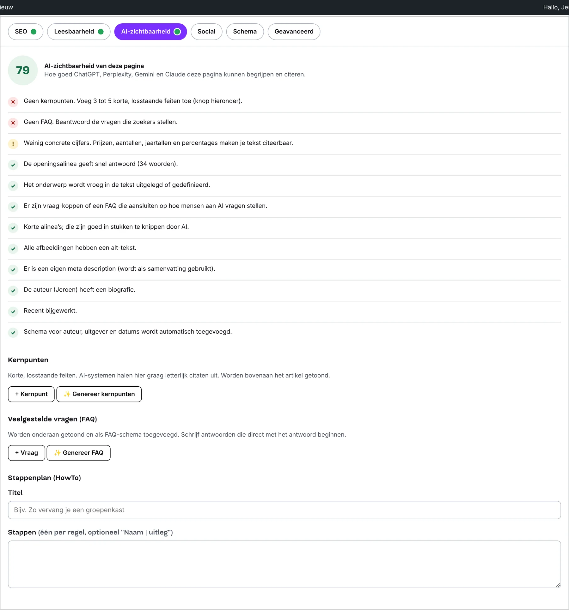
Social
Bepaal hoe de pagina eruitziet als je hem deelt op Facebook, LinkedIn of X: een eigen titel, beschrijving en afbeelding. Laat je ze leeg, dan worden de SEO-gegevens en de uitgelichte afbeelding gebruikt.
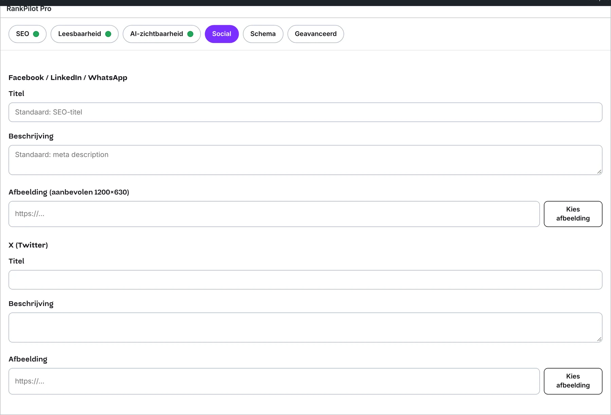
Schema en Geavanceerd
Schema bepaalt het paginatype (bijvoorbeeld Over ons, Contact of FAQ) en het artikeltype (Article, BlogPosting of NewsArticle). Het schema voor auteur, uitgever en datums voegt RankPilot Pro automatisch toe. Onder Geavanceerd stel je per pagina in of hij in zoekresultaten mag staan (noindex), of links gevolgd mogen worden, wat de canonical URL is en welke primaire categorie geldt. Hier markeer je ook je belangrijkste pagina's als cornerstone.
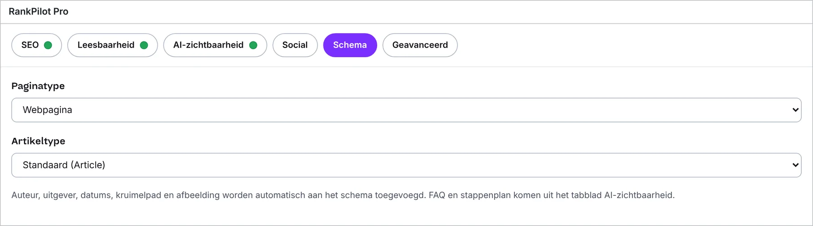
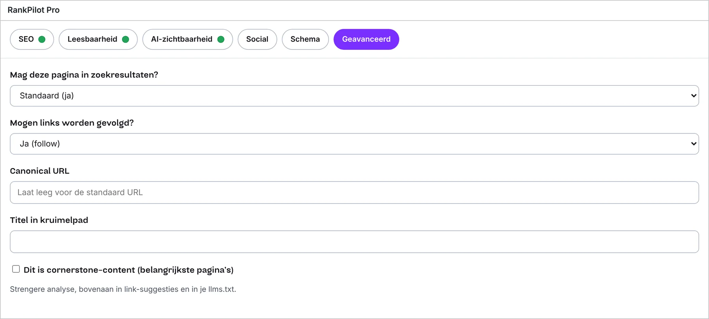
Instellingen
Alle instellingen staan onder RankPilot Pro → Instellingen, verdeeld over tabbladen. Wijzigingen gaan direct in na het opslaan.
Algemeen
De websitenaam voor in titels en schema, het scheidingsteken in titels en de verificatiecodes voor Google Search Console, Bing Webmaster Tools, Yandex en Pinterest. Verifieer je site ook bij Bing: Bing voedt ChatGPT Search en Copilot.
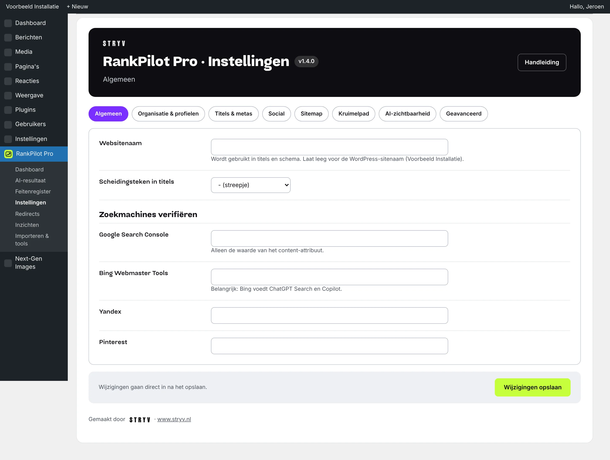
Organisatie & profielen
Vertel wie je bent. Kies of de site van een bedrijf of een persoon is, of van een lokaal bedrijf met een vestiging of werkgebied. Vul naam, omschrijving, logo, contactgegevens, adres, openingstijden en je profielen op social media in. Hier maken zoekmachines en AI-modellen hun beeld van je op. Schrijf de omschrijving in twee zinnen: wie ben je, wat doe je en voor wie.
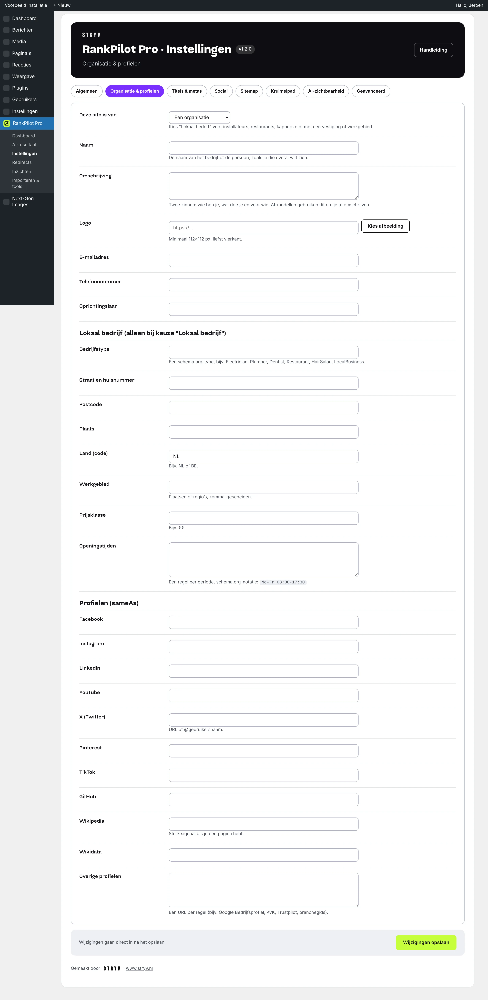
Titels & metas
Sjablonen voor de titel en description van de startpagina, elk inhoudstype, de archieven en de taxonomieën, plus de keuze of iets in zoekresultaten en in de sitemap hoort. In de sjablonen gebruik je variabelen:
| Variabele | Wat je krijgt |
|---|---|
%%title%% | De titel van de pagina |
%%sitename%%, %%sitedesc%% | De websitenaam en de slogan |
%%sep%% | Het gekozen scheidingsteken |
%%excerpt%% | Het uittreksel of een automatische samenvatting |
%%focuskw%% | De focus-keyphrase |
%%date%%, %%modified%%, %%currentyear%% | Publicatiedatum, wijzigingsdatum en het huidige jaar |
%%category%%, %%primary_category%%, %%tag%% | Categorieën en tags |
%%page%% | Paginanummer bij gepagineerde content |
%%name%%, %%term_title%%, %%term_description%% | Auteursnaam en gegevens van een term |
%%pt_single%%, %%pt_plural%%, %%searchphrase%% | Naam van het inhoudstype en de zoekopdracht |
%%cf_veldnaam%% | De waarde van een eigen veld |
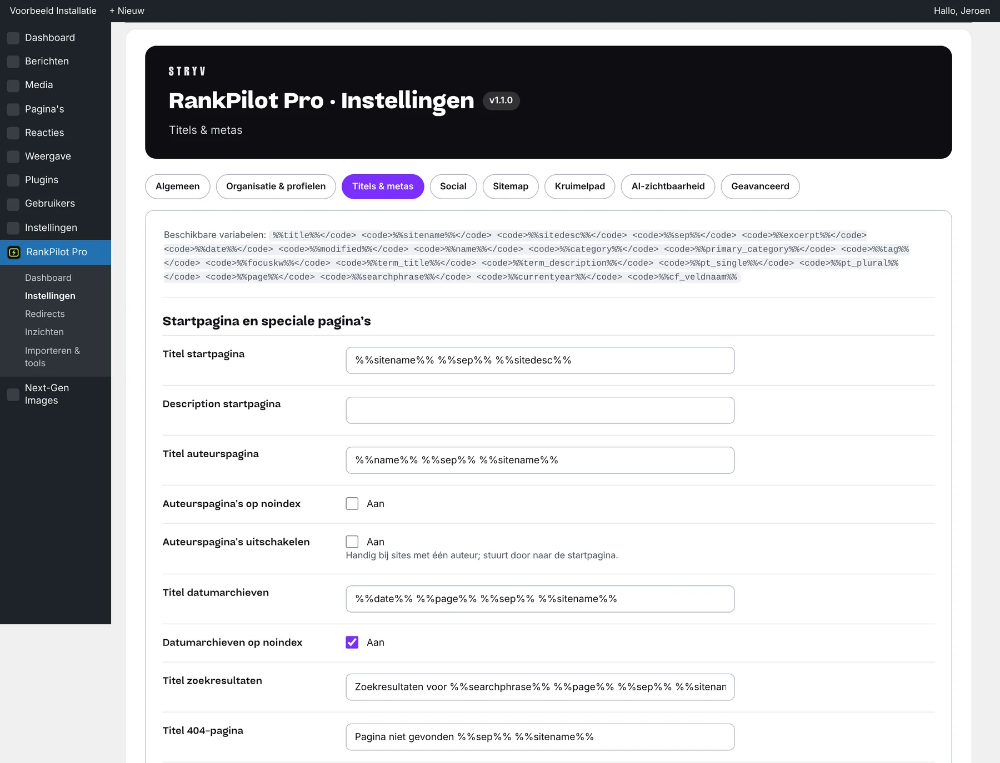
Social
De standaardafbeelding voor delen en voor het zoekresultaat als een pagina zelf geen afbeelding heeft, het kaarttype voor X, de gebruikersnaam van de site op X en een Facebook App ID.
Sitemap
De XML-sitemap staat op /sitemap_index.xml. Je kiest of afbeeldingen en een auteurs-sitemap worden opgenomen, hoeveel URL's er in een sitemap mogen staan en welke pagina's je uitsluit. Dien deze sitemap in bij Google Search Console en Bing Webmaster Tools.
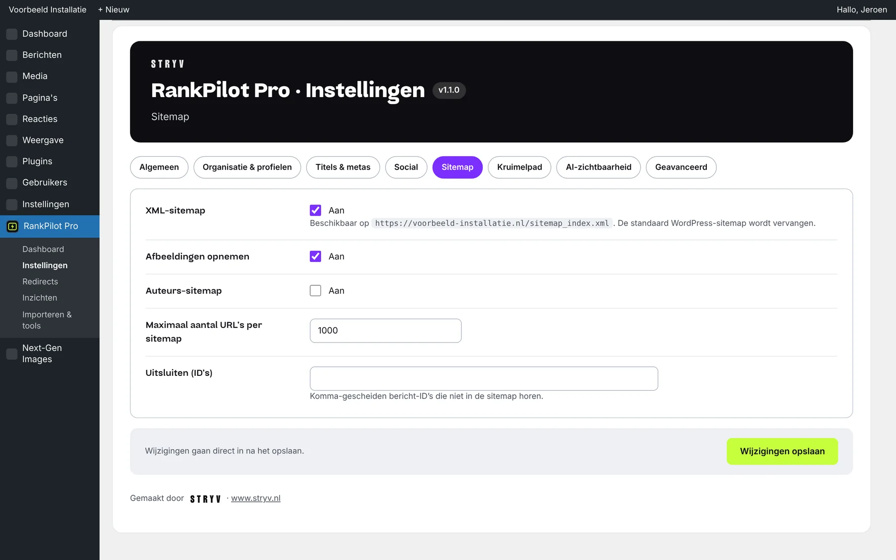
Kruimelpad
Plaats [rankpilot_breadcrumbs] in je content, of <?php rankpilot_breadcrumbs(); ?> in je thema. Thema's die yoast_breadcrumb() aanroepen werken direct. Je stelt de tekst voor de startpagina, het scheidingsteken en een voorvoegsel zoals "Je bent hier:" in. Het schema voor het kruimelpad wordt altijd toegevoegd.
Geavanceerd
Automatisch een 301-redirect maken als je een URL wijzigt, 404-fouten bijhouden, de head opschonen, bijlagepagina's doorsturen, gepagineerde archieven op noindex zetten, een Last-Modified-header sturen en tekst onder RSS-items zetten.
AI-zichtbaarheid
Het tabblad AI-zichtbaarheid bij de instellingen bevat alles voor vindbaarheid in AI-assistenten.
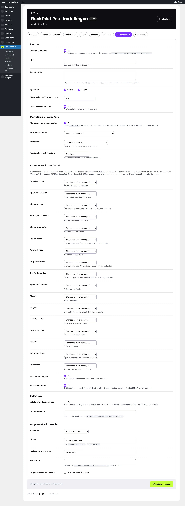
llms.txt
Een leesbare samenvatting van je site voor AI-systemen, op /llms.txt. Optioneel komt er ook /llms-full.txt met alle inhoud als Markdown. Je kiest de titel, een samenvatting in twee zinnen, de inhoudstypes en het maximale aantal links per type. Eigen feiten uit het Feitenregister komen er als blok Feiten bij.
# Voorbeeld Installatie
> Elektricien voor woningen en bedrijven in de regio.
## Belangrijkste pagina's
- [Diensten](https://voorbeeld-installatie.nl/diensten/): groepenkast, laadpaalMarkdown per pagina
Voeg ?format=md toe aan een URL voor een schone tekstversie zonder opmaak, bijvoorbeeld https://jouwsite.nl/kennis/groepenkast-vervangen/?format=md. De Markdown-versie wordt aangekondigd in de head en staat zelf op noindex.
Kernpunten, FAQ en datum
Bepaal of kernpunten bovenaan of onderaan het artikel staan, of de FAQ onderaan staat en of een zichtbare datum Laatst bijgewerkt verschijnt. Het FAQ-schema wordt altijd toegevoegd. Wil je de blokken zelf plaatsen? Gebruik de shortcodes [rankpilot_takeaways] en [rankpilot_faq].
AI-crawlers in robots.txt
Kies per crawler wat er in robots.txt komt: Standaard (niets toevoegen), Toestaan of Blokkeren. Er is keuze uit 17 crawlers, waaronder OpenAI, Anthropic, Perplexity, Google-Extended, Bingbot en Meta.
| Soort bot | Voorbeelden | Advies |
|---|---|---|
| Zoek- en gebruikersbots | OAI-SearchBot, ChatGPT-User, PerplexityBot, Claude-SearchBot, Claude-User, Bingbot | Op Toestaan zetten. Dit bepaalt of je in antwoorden van ChatGPT, Perplexity en Claude kunt voorkomen. |
| Trainingsbots | GPTBot, ClaudeBot, Google-Extended, CCBot | Een zakelijke keuze. Ze bepalen alleen of je inhoud voor het trainen van modellen wordt gebruikt. |
Met AI-crawlers loggen zie je op het dashboard welke bots je site bezoeken.
IndexNow
Meldt nieuwe, gewijzigde en verwijderde pagina's direct aan Bing en andere deelnemende zoekmachines. Bing is de zoekindex achter ChatGPT Search en Copilot. Het sleutelbestand staat op /jouw-sleutel.txt en wordt automatisch aangemaakt.
AI-generator in de editor
De knoppen met een ster in de editor laten een AI keyphrases, titels, descriptions, kernpunten en een FAQ voorstellen. Kies bij de instellingen de aanbieder (Anthropic of OpenAI), het model, de taal en vul je API-sleutel in.
Zet je API-sleutel liever in wp-config.php
Dat is veiliger dan hem in de database te bewaren: define( 'RANKPILOT_API_KEY', 'jouw-sleutel' );. De sleutel wordt alleen gebruikt als je zelf op een generatorknop klikt. De tekst van de pagina gaat dan naar de gekozen aanbieder.
Redirects
Onder RankPilot Pro → Redirects beheer je doorverwijzingen en zie je welke pagina's niet bestaan.
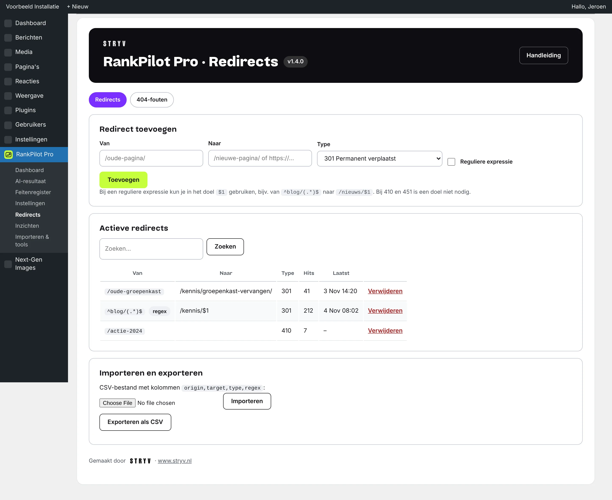
- Vul bij Van het oude pad in, bijvoorbeeld
/oude-pagina/. - Vul bij Naar het nieuwe pad of een volledige URL in.
- Kies het type: 301 (permanent), 302 of 307 (tijdelijk), 308 (permanent, methode behouden), 410 (verwijderd) of 451 (juridisch niet beschikbaar). Bij 410 en 451 is geen doel nodig.
- Klik op Toevoegen.
Met Reguliere expressie redirect je hele groepen. Van ^blog/(.*)$ naar /nieuws/$1 stuurt /blog/iets/ door naar /nieuws/iets/. Via de knoppen onderaan importeer en exporteer je redirects als CSV (kolommen origin,target,type,regex). Wijzig je de URL van een bericht, pagina of term, dan maakt RankPilot Pro automatisch een 301 aan.
404-fouten
Het tabblad 404-fouten toont welke niet-bestaande URL's bezocht zijn, hoe vaak, wanneer en vanaf waar. Met Redirect maken zet je er in één klik een doorverwijzing van.
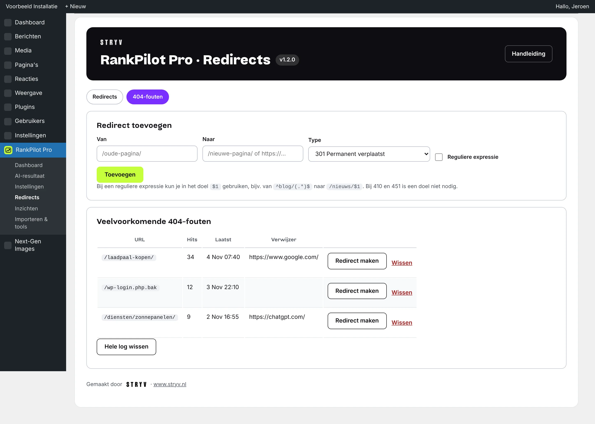
Inzichten
Onder RankPilot Pro → Inzichten zie je hoe je pagina's naar elkaar linken. Interne links helpen zoekmachines en AI-crawlers je pagina's te vinden.
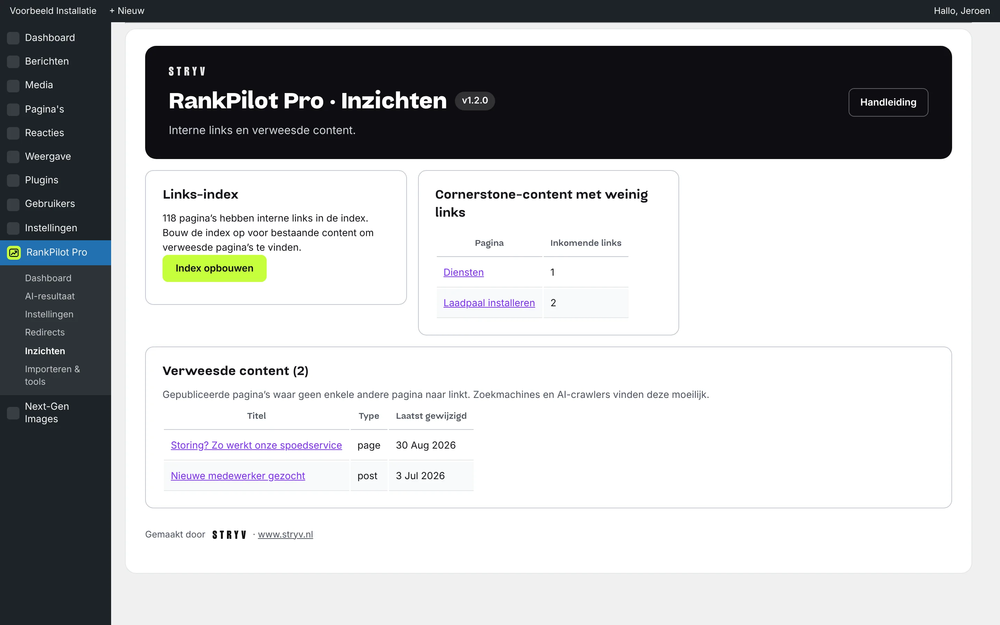
- Links-index: klik op Index opbouwen om je bestaande content te scannen.
- Cornerstone-content met weinig links: je belangrijkste pagina's die te weinig inkomende links hebben.
- Verweesde content: gepubliceerde pagina's waar geen enkele andere pagina naar linkt. Die vinden crawlers moeilijk.
Importeren en tools
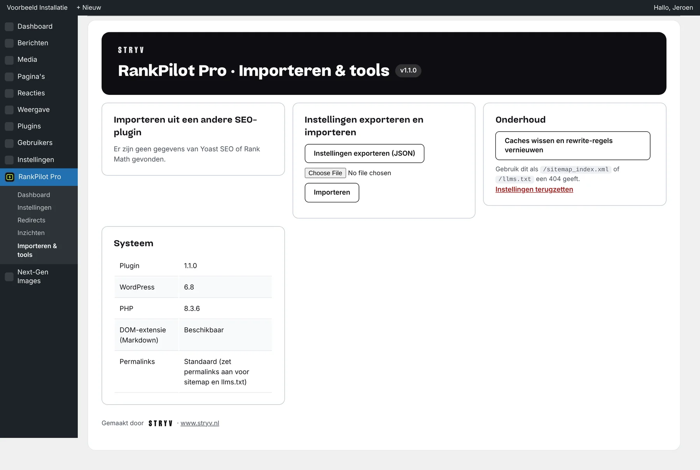
Importeren uit Yoast SEO of Rank Math
Staat een van die plugins op je site, dan zie je hier een knop Importeer uit …. RankPilot Pro neemt titels, descriptions, keyphrases, robots-instellingen, social-velden, cornerstone, redirects en sjablonen over. Bestaande RankPilot-waarden worden niet overschreven en er wordt niets verwijderd bij de bron. Maak voor de zekerheid eerst een back-up. Zet de andere plugin daarna uit.
Instellingen exporteren en importeren
Bewaar je instellingen als JSON-bestand en zet ze op een andere site terug. Handig om meerdere sites gelijk in te stellen.
Onderhoud
- Caches wissen en rewrite-regels vernieuwen: gebruik dit als
/sitemap_index.xmlof/llms.txteen 404 geeft. - Instellingen terugzetten: zet alle instellingen terug naar de standaardwaarden. De SEO-gegevens bij je pagina's blijven staan.
Updates
RankPilot Pro werkt via het gewone updatesysteem van WordPress. Nieuwe versies verschijnen onder Dashboard → Updates en in de pluginlijst, en je installeert ze met één klik. Bij de plugin kun je ook automatische updates inschakelen, net als bij andere plugins.
- Ga naar Plugins. Is er een nieuwe versie, dan staat er een melding onder RankPilot Pro.
- Klik op Nu bijwerken. Of ga naar Dashboard → Updates, vink RankPilot Pro aan en kies Plugins bijwerken.
- Wil je zelf controleren? Klik onder de plugin op Controleer op updates. De plugin vraagt dan meteen bij GitHub of er een nieuwere versie is.
Via Details bekijken zie je wat er in de nieuwste versie veranderd is. Dezelfde lijst staat in de changelog.
Je instellingen en de SEO-gegevens bij je pagina's blijven behouden.
Wat er bij een update naar buiten gaat De plugin vraagt alleen bij de openbare GitHub-pagina van RankPilot Pro welke versie de nieuwste is. Er worden geen gegevens over je site meegestuurd. De installatie gebruikt alleen pakketten uit de officiële repository van STRYV.
Handmatig bijwerken
Lukt het updaten in WordPress niet, bijvoorbeeld door een beperking van je hosting? Download dan de nieuwste rankpilot-pro.zip van de laatste release, ga naar Plugins → Nieuwe plugin → Plugin uploaden en kies Huidige vervangen door geüploade.
Veelgestelde vragen
De sitemap of llms.txt geeft een 404.
Ga naar Instellingen → Permalinks en sla op, of gebruik RankPilot Pro → Importeren & tools → Caches wissen en rewrite-regels vernieuwen. Staat er een echt bestand robots.txt, sitemap.xml of llms.txt in de hoofdmap van je site? Verwijder dat, anders gaat dat bestand voor.
Ik zie dubbele metatags of dubbel schema.
Er staat nog een andere SEO-plugin aan. Importeer eerst en zet Yoast SEO, Rank Math, All in One SEO of SEOPress daarna uit. Ook sommige thema's voegen zelf metatags toe.
Veel pagina's tonen "Geen zoekwoord".
Dat klopt zolang er geen focus-keyphrase is ingesteld. Importeer je vanuit Yoast of Rank Math, dan worden bestaande keyphrases overgenomen. Anders vul je ze in de editor in. Je kunt de lijst filteren op Geen zoekwoord en per pagina een keyphrase toevoegen.
De scores in de lijst kloppen niet met de editor.
De score in de editor is leidend en wordt opgeslagen als je de pagina opslaat. De berekening via het dashboard is eenvoudiger. Open de pagina en sla hem op voor de volledige score.
Het dashboard toont geen AI-crawlers.
Controleer of AI-crawlers loggen aanstaat. Sites met een paginacache tonen alleen bezoeken die de cache missen. Het overzicht vult zich zodra bots als GPTBot of PerplexityBot je site bezoeken.
Het Feitenregister meldt iets dat klopt, of mist iets.
De controle zoekt patronen in de tekst en is niet waterdicht. Een bewust ander nummer of adres zet je bij Ook toegestaan, of je kiest Negeren. Mist de controle iets, dan staat het waarschijnlijk niet in de tekst van de editor, maar in een paginabouwer, een afbeelding of een thema-onderdeel. Controleer die onderdelen zelf.
Staat mijn site nu gegarandeerd in ChatGPT?
Nee. Dat kan niemand beloven. RankPilot Pro zorgt dat AI-systemen je site mogen lezen, goed begrijpen en makkelijk kunnen citeren. Daarna hangt het af van de kwaliteit en autoriteit van je inhoud.
Werkt het met paginabouwers zoals Elementor?
De metatags, het schema en de sitemap werken altijd. De live analyse leest de tekst uit de editor. Bij paginabouwers kan die beperkt zijn en meldt de plugin dat in de SEO-analyse.
Verwijderen
Deactiveer en verwijder de plugin via Plugins. De instellingen en de eigen tabellen (redirects, 404-log, linkindex, crawlerlog en de AI-resultaatcijfers) en het Feitenregister met het controlerapport worden dan opgeruimd. De SEO-gegevens bij je pagina's blijven bewaard, zodat je ze terugvindt als je de plugin opnieuw installeert.